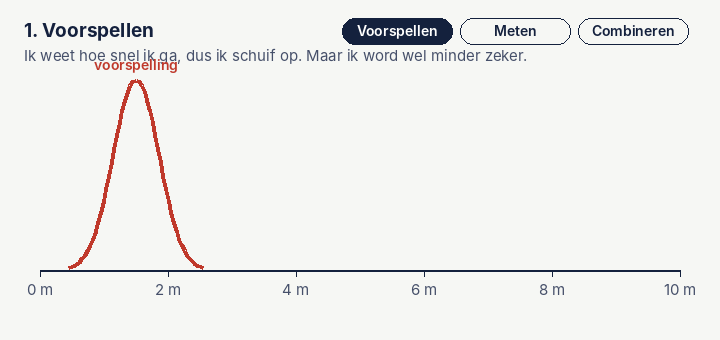

Het Kalmanfilter, simpel uitgelegd
Het Kalmanfilter zit in je telefoon, in elke drone, in de navigatie van auto's en vliegtuigen en in de GNSS-ontvanger van een landmeter. Het klinkt ingewikkeld, maar het idee past in één zin: combineer wat je verwacht met wat je meet, en vertrouw het meest op wat het zekerst is.

Een voorbeeld: lopen met je ogen dicht
Stel, je loopt met je ogen dicht door een lange gang. Je weet ongeveer hoe groot je stappen zijn, dus je kunt tellen hoe ver je bent. Maar elke stap is net anders, dus hoe verder je loopt, hoe minder zeker je bent van waar je precies staat.
Af en toe doe je even je ogen open en zie je een deur waarvan je weet waar hij zit. Dan weet je weer beter waar je bent. Maar ook dat is niet perfect: je ziet de deur misschien maar half.
Wat doe je dan? Je gooit je schatting niet weg, en je gelooft ook niet blind wat je ziet. Je combineert ze. Dat is precies wat een Kalmanfilter doet, alleen dan met getallen en heel vaak per seconde.
De drie stappen
1. Voorspellen
Het filter gebruikt wat het weet over de beweging, bijvoorbeeld de snelheid, om te voorspellen waar je nu bent. Bij elke voorspelling wordt de onzekerheid groter, want het model is nooit perfect. In de gif zie je dat de rode kromme opschuift én breder wordt.
2. Meten
Er komt een meting binnen, bijvoorbeeld van GPS. Die heeft zijn eigen onzekerheid. Dat is de gestippelde kromme.
3. Combineren
Het filter legt de twee over elkaar. De nieuwe schatting ligt ertussenin, dichter bij de kant die het zekerst is. En het mooiste: de nieuwe schatting is smaller dan allebei. Twee onzekere bronnen samen zijn zekerder dan elk apart.
Daarna begint het weer opnieuw bij stap 1. Steeds voorspellen, meten, combineren.
De Kalman-gain: een schuifregelaar
Hoe ver de nieuwe schatting naar de meting schuift, heet de Kalman-gain, meestal geschreven als K. Het is een getal tussen 0 en 1.
| Situatie | Kalman-gain | Wat het filter doet |
|---|---|---|
| De voorspelling is erg onzeker, de meting is goed | bijna 1 | Volgt vooral de meting |
| Allebei even zeker | 0,5 | Neemt precies het midden |
| De meting is erg onzeker, de voorspelling is goed | bijna 0 | Houdt vooral vast aan de voorspelling |
Het filter rekent die gain bij elke stap opnieuw uit. Daardoor past het zich vanzelf aan: als GNSS even slecht is, leunt het meer op het model.
Probeer het zelf
Hieronder volgt een Kalmanfilter de hoogte van een drone die op en neer vliegt. De stippen zijn de metingen, met ruis. De groene lijn is de schatting van het filter, met daaromheen de onzekerheid. De stippellijn is de echte hoogte, die het filter niet kent.
Wat je ziet als je met de schuifjes speelt:
- Beweeglijkheid laag: het filter vertrouwt zijn model sterk. De lijn wordt mooi glad, maar loopt achter bij snelle bewegingen.
- Beweeglijkheid hoog: het filter vertrouwt vooral de metingen. Het reageert snel, maar wordt ook onrustig.
- Meer sensorruis: de stippen springen alle kanten op, maar het filter blijft verrassend dicht bij de echte hoogte.
Die twee instellingen heten in de vakliteratuur R (de ruis van de meting) en Q (de ruis van het model, of procesruis). Ze goed kiezen heet tunen, en dat is in de praktijk het meeste werk.
In formules, voor wie wil
Voor één getal, bijvoorbeeld de hoogte, zijn dit alle stappen. P is de onzekerheid van je schatting, R die van de meting, Q hoeveel onzekerheid er per stap bijkomt.
Voorspellenschatting = vorige schatting + snelheid × tijd
P = P + Q
GainK = P / (P + R)
Combinerenschatting = schatting + K × (meting − schatting)
P = (1 − K) × P
Meer is het niet. In echte systemen zijn het matrices in plaats van losse getallen, omdat je positie, snelheid en stand tegelijk bijhoudt. Maar het idee blijft precies hetzelfde.
Waar je het in de praktijk tegenkomt
- GNSS-ontvangers, ook die van landmeters, gebruiken een Kalmanfilter om metingen van satellieten te combineren tot een rustige positie.
- Inertiële navigatie in drones, meetauto's en vliegtuigen voegt gyroscoop, versnellingsmeter en GNSS samen. Zie hoe een INS werkt.
- Voetgangersnavigatie, waarbij het filter bij elke stap de snelheid op nul zet. Zie mijn eindopdracht.
- Je telefoon, als je kaart-app je blauwe stip netjes over de weg laat bewegen in plaats van te laten springen.
- De ruimtevaart: het filter werd in de jaren zestig al gebruikt in de navigatie van de Apollo-missies naar de maan.
Als het niet recht is: varianten
Het gewone Kalmanfilter werkt perfect als alles lineair is: rechte lijnen, geen bochten in de wiskunde. De echte wereld draait en kantelt. Daarvoor zijn er varianten:
| Variant | Simpel gezegd |
|---|---|
| Extended Kalman Filter (EKF) | Doet alsof een bocht lokaal een recht stukje is. Het meest gebruikt in navigatie. |
| Unscented Kalman Filter (UKF) | Stuurt een handvol slim gekozen testpunten door de bocht en kijkt waar ze uitkomen. |
| Particle filter | Gebruikt duizenden gokjes tegelijk. Werkt ook als er meerdere mogelijke antwoorden zijn, maar kost veel rekenkracht. |
Wat ik zelf heb geleerd
Toen ik het Kalmanfilter voor het eerst tegenkwam, zag ik vooral matrices. Het klikte pas toen ik het zag als twee klokkrommes die je over elkaar legt. Mijn tip: begin met één getal, zoals hierboven, en speel met Q en R. Als je snapt waarom de lijn glad of onrustig wordt, snap je het filter.
En nog één les uit de praktijk: een filter is zo goed als de data die erin gaat. Klopt je tijd of je eenheid niet, dan helpt geen enkel filter. Dat heb ik zelf gemerkt bij mijn eindopdracht.
Bronnen: R.E. Kalman, A New Approach to Linear Filtering and Prediction Problems, Journal of Basic Engineering, 1960; Roger Labbe, Kalman and Bayesian Filters in Python. De gif en simulatie zijn van mij.